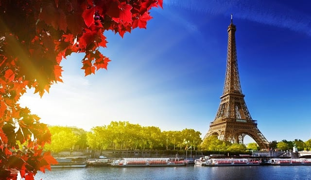
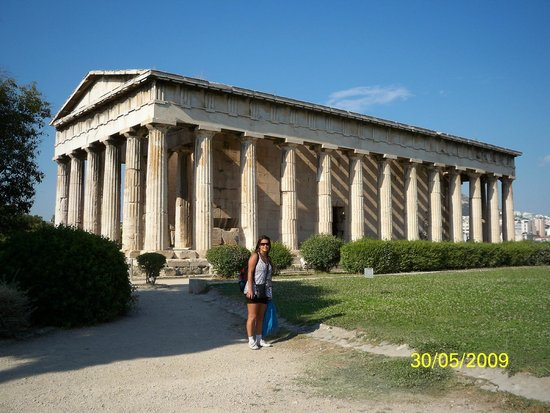
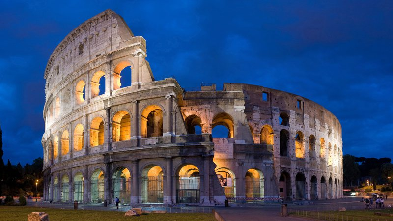

Seja bem vindo a Euro Tour!
Aqui você vai conhecer os lugares turísticos mais visitador pela Europa!
Torre Eiffel
A Torre Eiffel é um ponto turístico obrigatório em Paris, França. A sua construção foi em 1889 para celebrar os 100 anos da Revolução Francesa, e tem 325 metros de altura e 1.665 degraus.
Além de uma vista incrível que pode ser apreciada de diferentes maneiras, há vários restaurantes em torno da Torre Eiffel para aproveitar a culinária do país.
Devido à espera de pelo menos duas horas para conhecer a Torre, recomendamos comprar a entrada com antecedência.
Atenas
Atenas é um ponto turístico que tem o seu destaque por ter vários lugares arquitetônicos, como o Museu da Acrópole que possui um acervo de achados arqueológicos e esculturas dedicadas ao culto de Atena e Ártemis.
Outro lugar que também é dedicado à deusa grega Atena é o templo
Partenon, construído no século V a.C.
E não podemos deixar de mencionar o Templo de Zeus Olímpico, que é a ruína monumental de um antigo templo dedicado a Zeus.
Roma
O Coliseu de Roma ou Anfiteatro Flaviano é um dos principais pontos turísticos da Itália e um dos monumentos mais famosos do mundo. Com uma construção que se iniciou no ano de 72 d.C e serviu como palco para gladiadores que lutavam entre si, ele atrai pelo menos 4 milhões de turistas todos os anos. O Coliseu de Roma tinha capacidade para 70 mil pessoas e oferecia espetáculos para distrair a população. Devido à quantidade de turistas que costumam visitar o local, recomendamos que garanta o seu ingresso para o Coliseu com antecedência e evite filas.